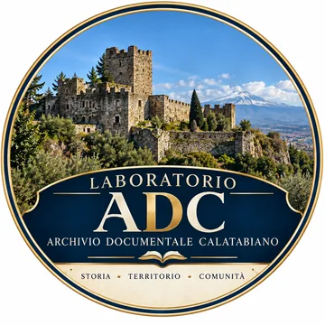

← Archivio Documentale Calatabiano

Archivio Documentale Calatabiano (ADC) · Ideazione e cura: Michele Bottino · Versione 1.0, 10 ottobre 2026
Documento di autoregolamentazione culturale ed editoriale. Non è uno statuto associativo, una certificazione di conformità o un riconoscimento istituzionale.
Il Laboratorio è un'iniziativa culturale personale e indipendente ideata e curata da Michele Bottino nell'ambito dell'ADC. Non è costituito come associazione, fondazione, ente pubblico o istituto accademico. Le denominazioni laboratorio e archivio descrivono le attività del progetto e non implicano accreditamenti.
Il Laboratorio promuove la conoscenza della storia di Calatabiano e del territorio attraverso studio delle fonti, divulgazione, memoria visiva e strumenti didattici digitali, con attenzione alla chiarezza e alla verificabilità.
Michele Bottino cura la selezione e la pubblicazione dei contenuti, assumendone la responsabilità nei limiti di legge. I contributi esterni richiedono accordi chiari sulle attribuzioni e sui diritti.
Il Laboratorio distingue fatti documentati, interpretazioni, ipotesi e tradizioni. Le fonti sono indicate quando ragionevolmente possibile; lacune e attribuzioni incerte sono dichiarate. Le conclusioni rimangono aperte a verifiche motivate.
Fotografie, riproduzioni, trascrizioni e appunti possono essere conservati in una raccolta privata di lavoro. La conservazione non autorizza la pubblicazione. I materiali inediti o riservati rimangono separati da quelli destinati al pubblico.
Prima della pubblicazione si verificano, secondo il caso, provenienza, autore, licenza, condizioni degli istituti conservatori, diritti sulle immagini e riservatezza delle persone. Si riportano le attribuzioni e le indicazioni sulle modifiche richieste dalle licenze.
I testi e le elaborazioni creative originali sono tutelati dalla legge applicabile. I fatti storici non sono oggetto di esclusiva. Le opere di terzi mantengono il loro regime di diritti; restano salve le eccezioni e le utilizzazioni consentite dalla legge.
Il Laboratorio limita la diffusione di dati personali non necessari. I trattamenti del sito sono descritti nelle pagine Privacy e Cookie, che devono rispecchiare i servizi effettivamente utilizzati. Questa Carta non sostituisce le informative né gli adempimenti di legge.
I giochi e i percorsi interattivi hanno finalità culturali e non rilasciano titoli o certificazioni. Le semplificazioni didattiche non devono confondere le ipotesi con i dati attestati. Nuove funzioni di registrazione o conservazione dei risultati richiederanno verifiche specifiche.
Il Laboratorio persegue testi leggibili, navigazione comprensibile, uso da tastiera e descrizioni alternative delle immagini. Gli eventuali obblighi normativi applicabili restano distinti da questo impegno.
Segnalazioni documentate di errori, attribuzioni inesatte o possibili violazioni possono essere inviate tramite la pagina Contatti. Il curatore le esamina e, se necessario, corregge, integra, sospende o rimuove contenuti, fatti salvi i diritti previsti dalla legge.
Il Laboratorio non rappresenta istituzioni senza un mandato espresso. Collaborazioni e patrocini sono dichiarati solo quando effettivi. La Carta può essere aggiornata, indicando data e versione. Non sostituisce autorizzazioni, obblighi legali o consulenze professionali eventualmente necessarie.
Michele Bottino · Curatore dell'Archivio Documentale Calatabiano